LunarCN帮助中心
目录
快速上手
1.1 如何安装LunarCN?
前往
下载页面下载LunarCN
待下载完成后,你需要确定你的电脑内有Lunar CN压缩包和解压软件
找到LunarCN压缩包的位置,选一个文件夹解压压缩包
文件路径不能含有中文(包括但不限于中文电脑用户名)
解压完成后,你应该会看到以下文件
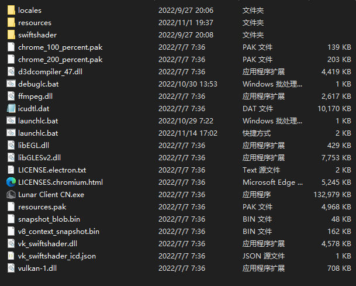
如果以上过程都没有出错 至此,LC-CN安装工作结束
1.2 如何创建LunarCN快捷方式?
安装好LunarCN后,每次使用LunarCN都要打开文件夹很麻烦,所以创建快捷方式很方便
找到LunarCN的文件夹
找到launchlc.bat,右键后选择创建快捷方式
移动快捷方式到桌面,右键---属性---快捷方式---更改图标
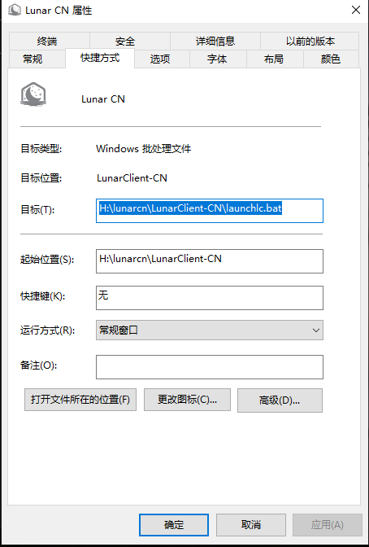
双击LunarCN文件夹内的Lunar Client CN.exe
然后,你的图标就变成Lunar的图标了,在桌面即可一键打开
1.3 如何启动LunarCN?[必看]
在LunarCN文件夹内找到launchlc.bat
如果你没有启用显示文件后缀名那么请双击launchlc
如果你创建了快捷方式就双击快捷方式
一定不要双击exe文件,否则会出现各种错误
打开后的页面如图所示
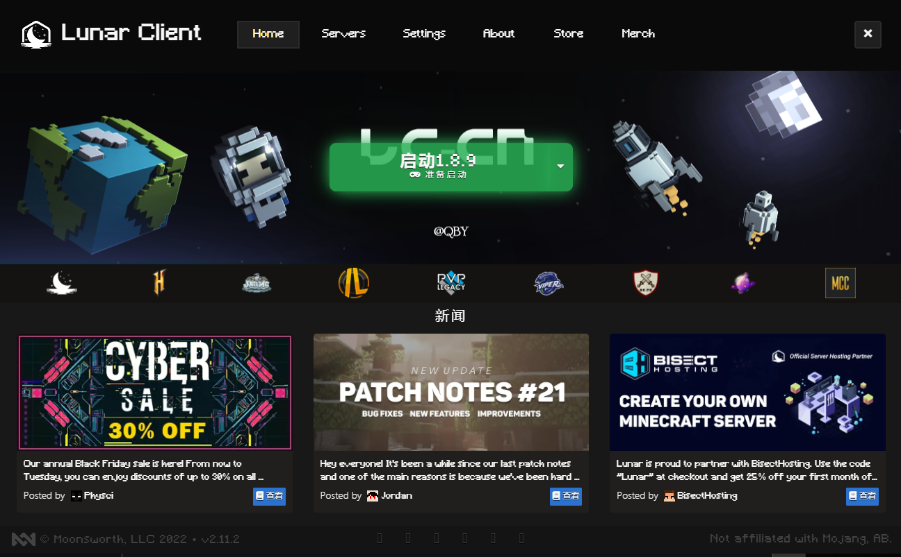
点击启动游戏
接下来请耐心等待,如果是第一次使用,或是游戏目录内没有启动的客户端的版本,等待的时间会稍微久一点
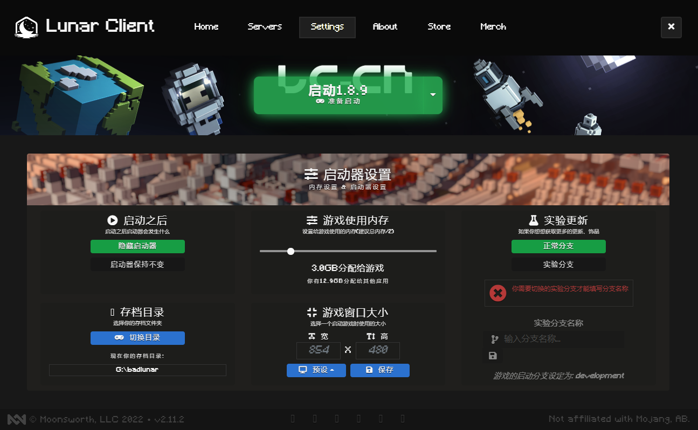
以上完成后,将会启动游戏进程,如果出现下图,请不要担心,你已经启动成功
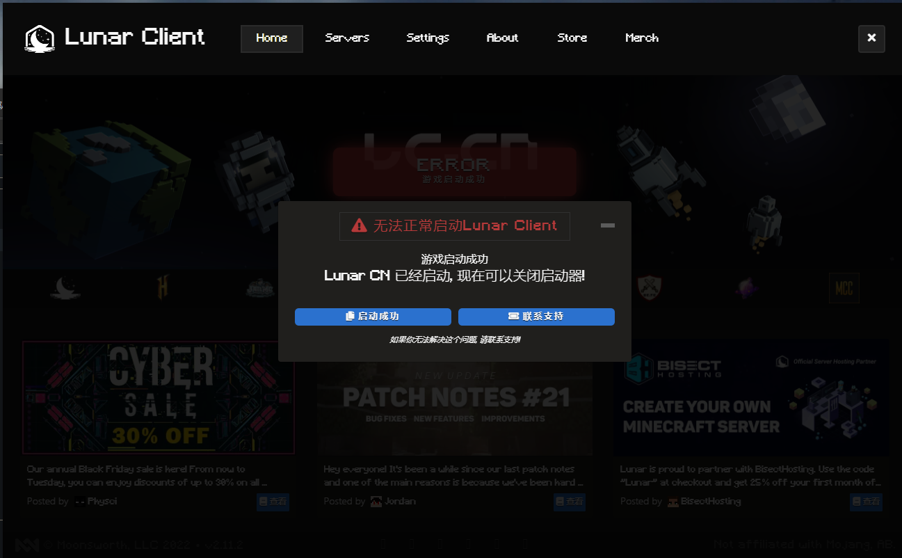
1.4 新用户如何登录账户?
如下图所示,这是很多新用户遇到的问题
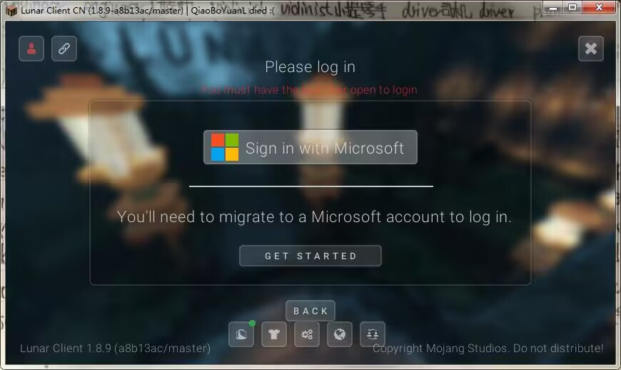
你需要在这时打开LunarCN启动器
也就是在登录时要保证LunarCN和游戏都在运行
这时再点击登录即可
1.5 如何开启全饰品等功能?
首先要知道,全饰品等功能是依赖javaagents工作
所以,你需要先去
下载页面下载mod包
下载完成后将jar文件加入LunarCN的文件夹\resources\javaagents
这时重新启动LunarCN就可以启动功能
关于全饰品
全饰品仅供娱乐,只有自己能看见
离线服务器并不能看见饰品
一般问题
2.1 pythonw错误
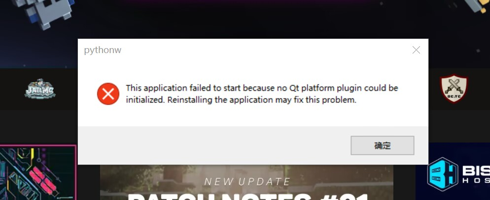
如图所示,出现这样的问题（原因：找不到qtruntime）
1.排查是否使用bat启动
2.把lc-cn文件放到桌面上
3.删除运行目录空格和中文
2.2 ffmpeg错误
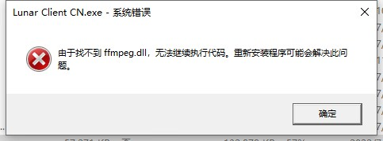
请排查是否使用bat启动lc-cn
如果无法解决,请下载此文件放入LunarCN运行目录
https://cloud.06dn.com/s/3oJ1SO
2.3 failed to load错误
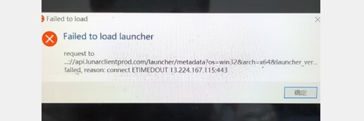
原因:连接lunar服务器超时
挂梯子解决
2.4 万能方法
方法一
Win键(就是你键盘上Windows图标的键)+R键 一起按
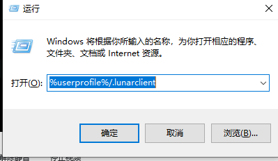
输入 %userprofile%/.lunarclient 点击确定或者回车
出现如图所示文件夹
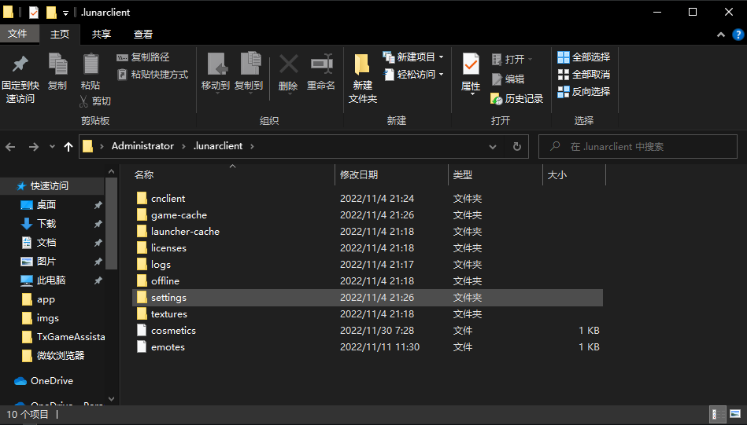
全选右键,删除,在回收站中彻底删除
再重新启动Lunar CN
方法二
还原JavaAgents
找到LunarCN文件夹\resources\javaagents 删掉里边的所有文件
还原参数
关闭启动器
然后找到lc-cn文件夹\resources\app
找到renderer.js 右键选择记事本打开 修改参数部分
改成const c_jvm_args = ["-server"]
然后保存即可
这些操作都做了还是无法启动
请不要使用LunarCN
关于封禁
3.1 封禁原因
封禁原因
1.开CubeWhy的实名/户籍
2.开纪boosting CubeWhy
3.在群里恶俗
4.MoreThanLucky are banned
5.泄露LC-CN fix10及以下无封禁的版本
6.神权
3.2 封禁名单
封禁LuckyInLove_因为跑路/实名/MoreThanLucky are banned
封禁Evecat114514
封禁LianBeans因为MoreThanLucky are banned
封禁LolQiQi_因为跑路/开外挂boosting CubeWhy(幸好用小号玩的,要不我大号没了L)
封禁Alyars因为MoreThanLucky are banned
封禁_Your_Lover_因为实名/跑路/辱骂他人/开安全黑客
更新日志
4.1 更新日志
v2.11.2-fix17 去除hwid验证 fpsfix滚回早期版本 移除中文修复 修复封禁 移除CubeWhys的ban bypass (被余鸿博盗走了) 增加time.sleep(114514) (AntiZzx)
v2.11.2-fix16 增加自动更新 (在代码中写了,但是bug多) 修复JavaAgent参数拼接bug
v2.11.2-fix15 LowIQ help -> Here 增加Jagents增加提示 增加汉化 增加Wiki 修改左下角为CubeWhy 修复启动参数拼接bug
v2.11.2-fix14 修复bugs
v2.11.2-fix13 增加彩蛋 修改首次启动提示, 改成判断版本 增加自动更新, 防止乐子破解LC-CN
v2.11.2-fix12-pre1 增加java助理参数 删掉一条MOTD
v2.11.2-fix12 可以增加自定义助理(省的天天上传全饰品, 不需要iq就可以增加) 移除启动报错自动报告, 防止LunarClient-CN死的太快 将启动处理交给client.py而不是LunarClient启动器 把启动交给lccnlauncher而不是lunarlauncher
v2.11.2-fix11 修复了中文修复的bug 完善了封禁系统 (具体更新见此处) 增加了修改窗口标题
v2.11.2-fix10 请查看源代码以了解此版本更新内容 中文修复修复因为文件夹空格导致无法启动的bug 优化fps
v2.11.2-fix9 修复反向优化
v2.11.2-fix8 跳过下载JRE, 提升启动速度
v2.11.2-fix7 不想更新到v2.12.8 qwq, 因为更新这个东西会废掉我一天的时间
中文修复兼容Windows 7
v2.11.2-fix6 应该是最后几个版本了...毕竟已经出官方中文修复了...(选择Forge然后装mod) 修复未选择过版本中文修复报错的bug
v2.11.2-fix5 此版本可以大幅提升性能 汉化Settings中未汉化的部分 进程优先级修复 隐藏中文修复黑窗口
v2.11.2-fix4 修复未定义的函数导致中文修复注入失败的错误
v2.11.2-fix3 请下载2.11.2-fix4版本, 本版本在修复1.19无法启动的bug的同时出现了无法注入中文修复的特性 修复1.19无法启动的bug [严重] 汉化部分错误报告
v2.11.2-fix2 直接双击Lunar Client.exe就可以打开, 不要再去问咋弄了, 连安装python都没了 1.9+版本不会启动中文修复 游戏关闭后中文修复会自动关闭
2.11.2-fix1 部分玩家收到了dev版本, 这个是正式版。 增加自定义JVM启动参数, 教程点这里 -server启动参数可以去除 优化inputfix-log, 未开启log的时候不创建log文件 此版本起自带python运行环境(主要是不会安装环境的人太多了, txt写了看不懂)
v2.11.2 升级到2.11.2版本
v2.10.1-fix2 修改不是人话的汉化 汉化部分错误报告
v2.10.1-fix1 修复因为依赖库错误而导致中文输入无法启动的bug
v2.10.1 此版本起开始开源 加入中文修复 汉化启动器(没汉化的地方就是改不了的地方)
v2.10.1-old1 bug贼多的版本, 本版本并没有开源 汉化About界面
Copyright © 2023 LunarCN All rights reserved